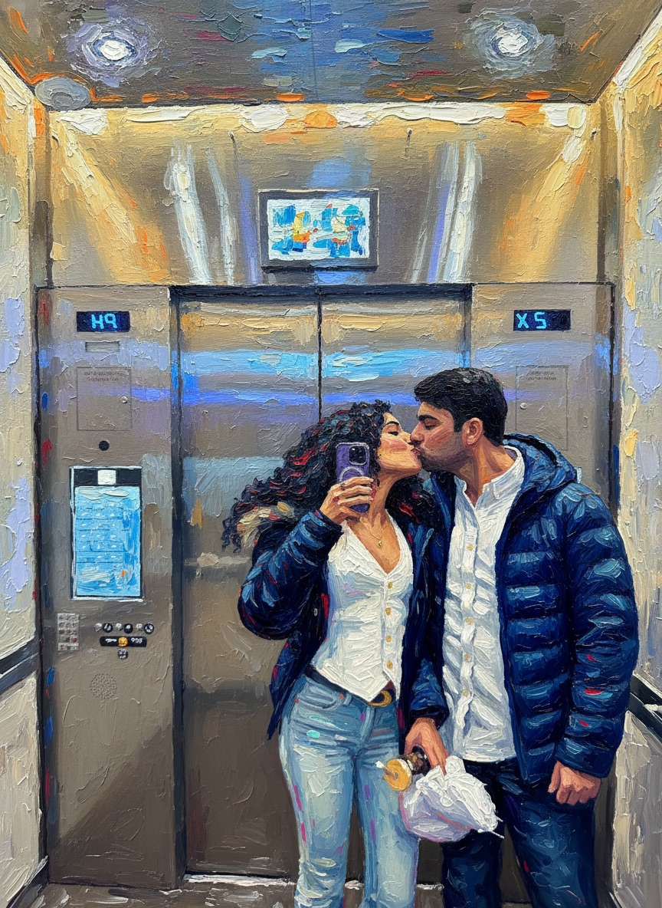

Saturday
June 20
Morning flight London to Milan. Drop bags, Duomo terraces or Brera, aperitivo, then a serious dinner. Sleep in Milan near Brera, Duomo, or Porta Venezia.
Private planning room
hint: Valentine's city
London -> Milan -> Lake Como / June 20-23, 2026
A polished, low-friction trip built around one proper Milan night, two soft lake days, and the kind of dinner reservations that make the whole thing feel intentional.

The Paris/Valentine's pattern is the reference point: romantic, not chaotic; personal, not generic.
The route is simple on purpose. Milan gets the Saturday night; Lake Como gets the emotional center; Tuesday stays buffered enough to make the flight back painless.
Morning flight London to Milan. Drop bags, Duomo terraces or Brera, aperitivo, then a serious dinner. Sleep in Milan near Brera, Duomo, or Porta Venezia.
Train Milano Centrale to Varenna-Esino. Check in, ferry to Bellagio, Villa Melzi, lakeside walk. Dinner should be near the sleep base so you are not hostage to late ferry timing.
Villa Monastero in the morning. Ferry to Tremezzo or Lenno. Book Villa del Balbianello only if the timed-entry and ferry logistics line up. Otherwise use the day for lunch, gardens, and a boat window.
Slow coffee, train back to Milan, airport transfer, fly to London. Target a return after 2:30pm; earlier flights make the morning feel like logistics instead of a final morning together.
The lake base is the key decision. For this length of trip, do not switch lake towns and do not base in Como town unless flights force it.
Pretty, walkable, direct train from Milan, easy ferries to Bellagio and Menaggio. This is the right answer without a car.
Grand-hotel glamour and stronger lakefront dining. Pick this if the hotel itself is part of the gift.
Convenient, but less special for this trip. It works for logistics, not for the memory you are trying to make.
Book one high-conviction dinner, one lake-view lunch, and one easy local dinner. Everything else can stay flexible.

Two-star Mandarin Oriental dinner. Polished, date-night serious, and the most Paris-level Milan option.
MichelinIconic Galleria location, one star, and window-table potential. Best "we are in Milan" energy.
MichelinElegant garden setting in the fashion district. Better if you want glamour without tasting-menu intensity.
OfficialBellagio grand-hotel atmosphere, panoramic setting, evening piano energy. The most cinematic dinner choice.
MichelinGrand Hotel Tremezzo's glamorous seafood lido. Ideal for Monday lunch or dinner if the weather is good.
OfficialDirectly on the water in Tremezzo, more intimate than the big-hotel move, and strong for a long lunch.
OfficialLock the constraints first, then the romance. Flights and hotels determine the whole shape.
Inbox access was not available when this page was drafted, so the Paris context is inferred from the existing private page and local memory cues. Re-check ferry times and restaurant hours close to travel.
Flight shape checked against London-Milan route data.
Milan to Como/Varenna train timings checked against Trenord route pages.
Ferry routing and central-lake transfer timing checked against Navigazione Laghi/Lake Como Travel references.
Michelin status and restaurant positioning checked against Michelin Guide listings.
Lake restaurant details checked through Grand Hotel Tremezzo and La Darsena official pages.
Villa Monastero opening/traffic context checked against the official Villa Monastero page.